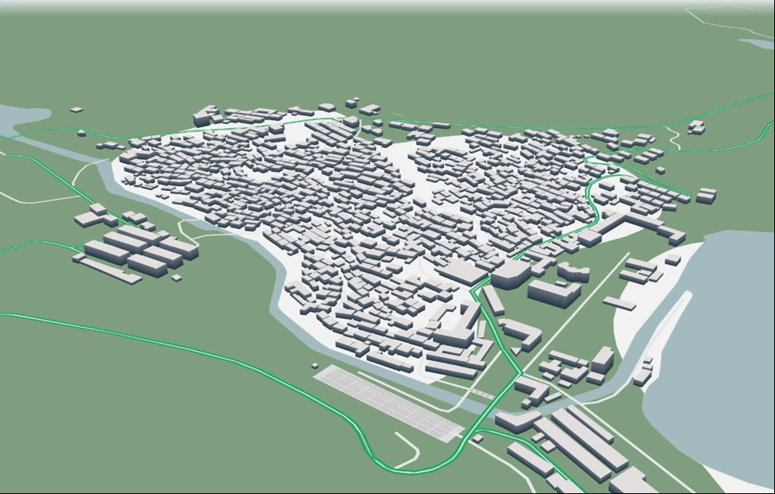
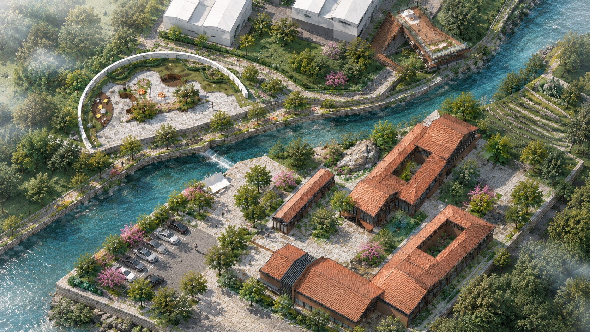
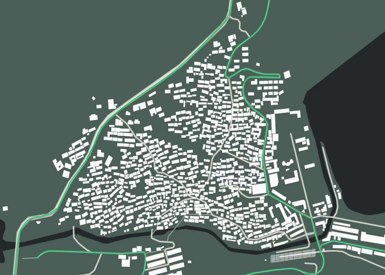
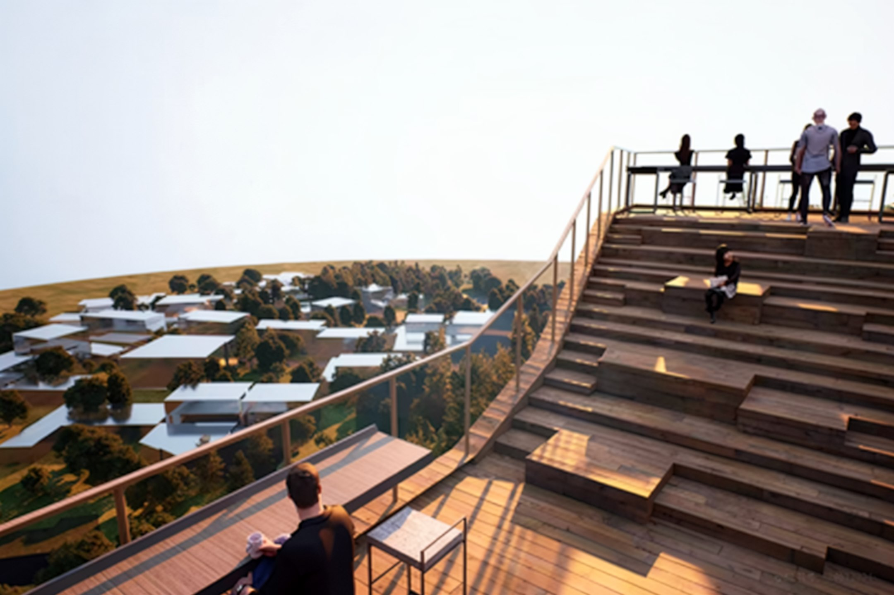
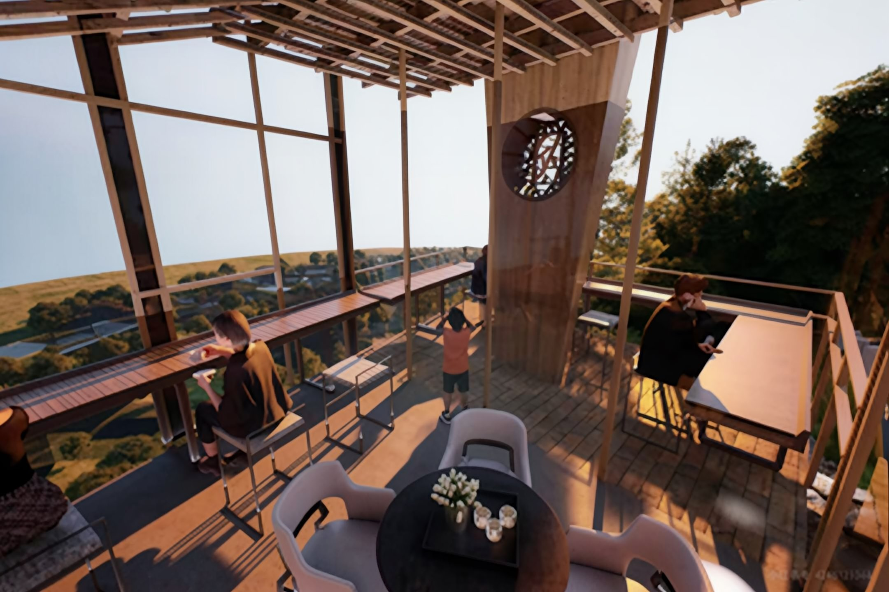
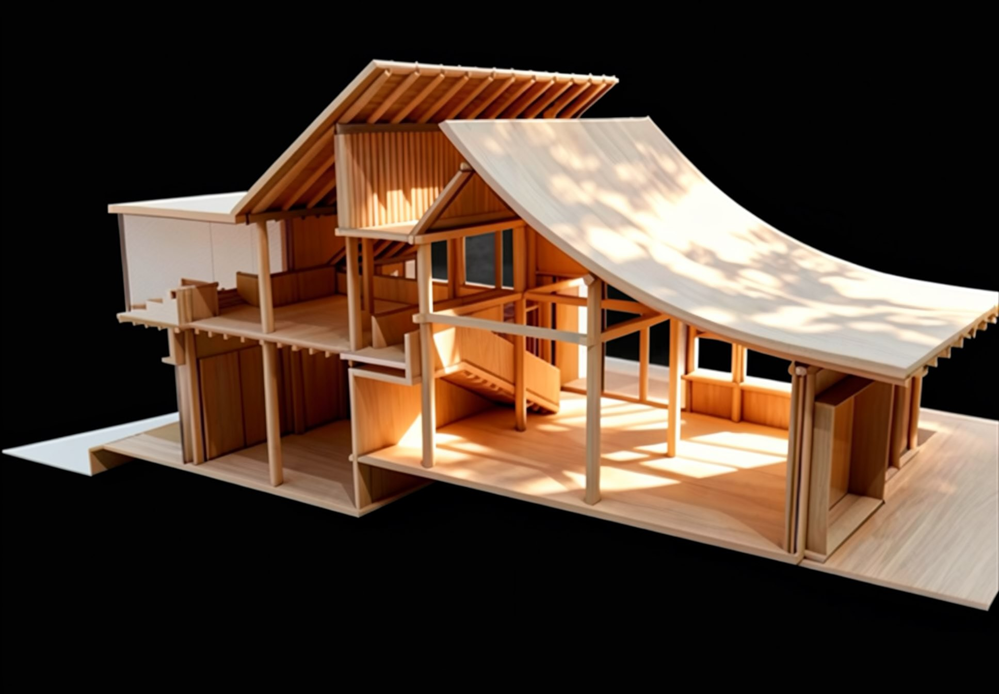
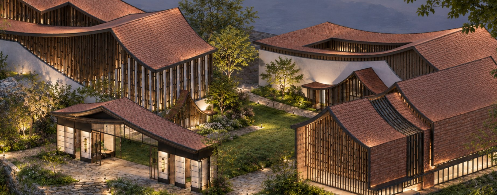
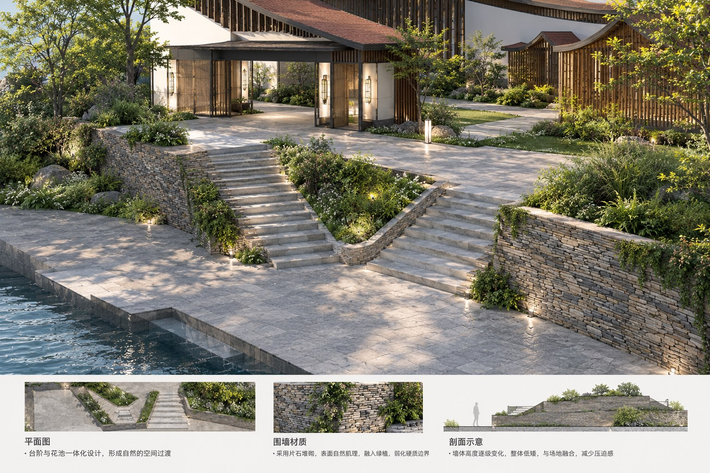
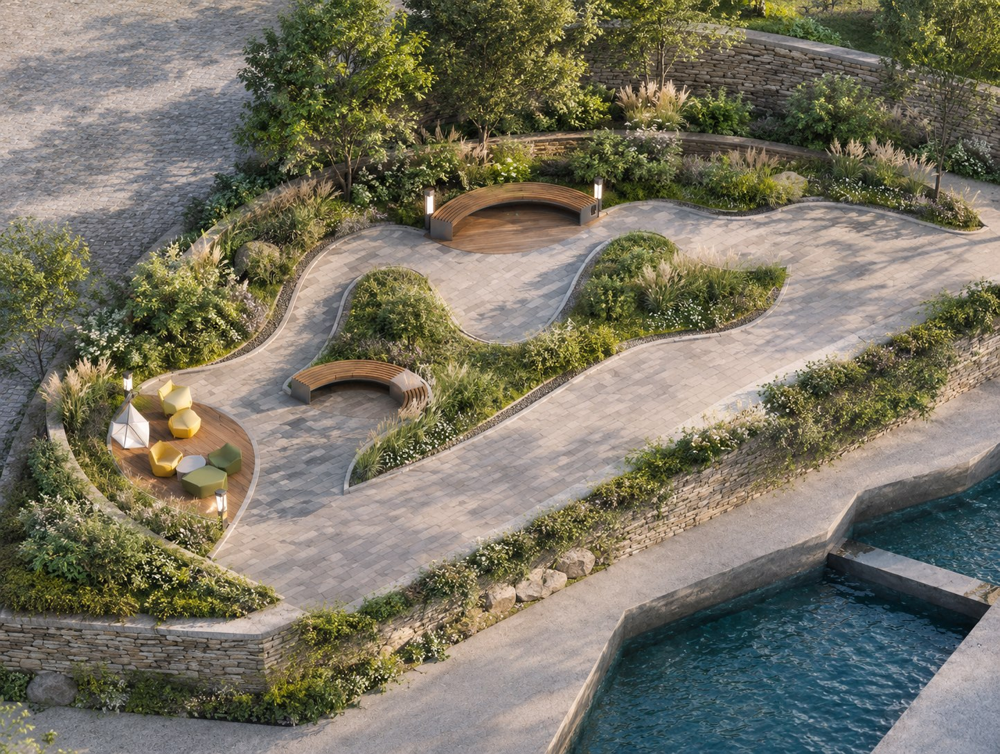

图片加载失败
图片加载失败
青山村地处崂山风景区太清游览区核心地带，北依狮子峰，南邻青山湾，占据崂山东南端背山面海的优越区位。村落依托 7.2 公里曲折海岸线与险峻山体，造就了"依山而建、层层叠叠"的梯田景观，至今保留红瓦石墙、海草房等典型胶东民居风貌。基地内部道路已具雏形，但人车混行、公共停车不足等痛点亟需通过设计优化。


LAOSHAN · QINGSHAN VILLAGE LANDSCAPE DESIGN
"青峦"指代场地背靠的青山茶园，是乡村的生态根基与自然底色；"望海"凸显村落面海而居的独特区位，承载渔村人文记忆与开阔视野。设计以尊重自然、延续文脉、山海相融为核心，低干预改造老村委片区，让建筑、茶田与山海有机共生。
SCROLL
图片加载失败 青峦望海 · 建筑组团鸟瞰青山村地处崂山风景区太清游览区核心地带，北依狮子峰，南邻青山湾，占据崂山东南端背山面海的优越区位。村落依托 7.2 公里曲折海岸线与险峻山体，造就了"依山而建、层层叠叠"的梯田景观，至今保留红瓦石墙、海草房等典型胶东民居风貌。基地内部道路已具雏形，但人车混行、公共停车不足等痛点亟需通过设计优化。

基地地势整体略有起伏，形成丰富的竖向地形层次；大部分区域坡度小于 15°，适宜建筑与道路布局，局部陡坡结合景观做生态化处理。基地主要朝向为南向与东向，日照充足、通风良好。设计策略：顺应地形肌理，最大化利用自然条件，实现建筑与环境的有机融合。

基地内保留国槐、银杏等古树名木与大量乡土树种，生态价值基底高；现存自然池塘与多条灌溉沟渠水系连通良好；土壤以砂质壤土为主，深厚透气，适宜多种乔灌木生长。设计策略：保护现有古树与水系，最小化人工干预，营造近自然的生态景观。
气候应对：青岛属暖温带季风气候，四季分明、温和湿润（年均温 12~13℃、年降水 600~800mm）。夏季湿热多雨，注重遮阳通风、透水铺装与雨水花园；冬季寒冷干燥，采用南向布局与防风林；海洋性气候湿度大，选用耐腐蚀材料并加强通风防潮，打造四季可用的公共空间。
人群需求：本地村民需要日常休闲、健身、社交与养老服务；游客追求特色餐饮、精品民宿与文化体验；村委关注会议培训与村民接待空间。设计兼顾多方利益，创造主客共享的共生空间。
青岛自 1891 年清廷建置起步，历经德占、日据时期，1949 年新中国成立后逐步发展为重要工业基地与对外开放窗口；改革开放以来更焕新为国际化海滨旅游城市。村庄聚落与城市文脉同频演进，构成场地深厚的人文底色。
以"海草房"为代表的胶东民居兼具防风防潮与地域美学；提取传统窗棂纹样、屋脊曲线与赭石色调作为现代设计的视觉基因，并融入贝壳肌理、波浪形态等海洋文化元素，让空间既厚重又灵动。
尊重场地等高线与茶园肌理，以轻盈木结构与通透玻璃界面消解建筑体量，将观景平台顺势嵌入梯田，不破坏茶田生产功能，最大化保留山海视野，让建筑成为观海望山的取景框。



老村委主楼等
对具有历史价值和地域特色的建筑，重点进行结构加固与原貌修缮，留住乡村记忆。
结构完好 · 功能落后
实施功能置换与立面改造，注入新业态，提升空间使用效率。
安全隐患 · 无保留价值
拆除破旧建筑，为新建公共建筑与景观绿化腾出空间。
设计愿景
构建四季宜人、主客共享的乡村空间，实现生态、生活与生产的可持续发展。
顺应场地等高线与村落原有肌理，打通山海视线通廊，保留茶园梯田与滨海渔港等本土特色，营造望山见海、栖居乡野的空间氛围。
依托茶园梯田与山海格局，打造茶园观景平台与生态景观带：轻盈木构建筑嵌入茶田，最大化保留望海视野；绿化以本土茶园为核心搭配乡土植物，延续生产功能的同时提供品茗观海的休憩体验。
三草在二草基础上深化落位：观景平台与茶室承载登高望海的核心体验，环形景观公园服务村民日常休闲，文化展示与民俗空间延续村落文脉，品茗区让茶园生产与游览体验共生，水系串联各功能片区。
茶室提取胶东民居传统木构形制，以轻盈原木结构与通透玻璃界面消解体量，隐于茶田、融于青山；观景台以阶梯式架空平台延伸茶田视野，打造多层次观景点。
主体建筑两层布局，首层承载文化展示与公共活动，二层转为观景与休憩空间，流线清晰、视野逐级抬升。
剖面顺应场地坡地高差层层退台，室内视线穿越茶田直抵海面，验证"望海"主题在空间中的真实可达。
观景平台 · 鸟瞰

图片加载失败夜景 · 建筑组团

图片加载失败滨水台阶 · 透视
观景平台 · 细部
 图片加载失败
图片加载失败
黄昏建筑群 · 鸟瞰
 图片加载失败
图片加载失败
入口庭院 · 人视

图片加载失败圆形剧场 · 俯视